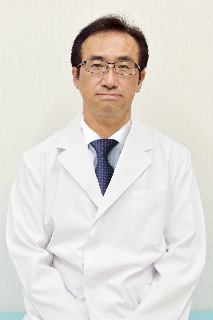

院長挨拶

院長：山本 直哉
青葉台整形外科リウマチ科 院長の山本 直哉です。
当院では、MRI・CTを活用した精密な画像診断と、理学療法士による個別リハビリを組み合わせ、痛みの原因を丁寧に見極めたうえで最適な治療をご提案しています。
手術を望まない方には保存療法を中心に、生活の質を高めるための「続けられる治療」を大切にしています。
また、健康診断や予防接種にも対応し、「病気にならない身体づくり」にも力を入れています。
お身体の違和感や不安があれば、どんな些細なことでも構いません。
地域の皆さまに寄り添い、安心して相談できる整形外科であり続けたいと考えています。
| 東京大学医学部 卒業 |
| 三井記念病院 |
| 東京都立病院 など |
| 日本整形外科学会認定 整形外科専門医 |
| 日本整形外科学会認定 リウマチ医 |
| 日本整形外科学会認定 運動器リハビリテーション医 |
| 日本整形外科学会認定 脊椎脊髄病医 |
| 義肢装具等適合判定医 |
| 日本医師会認定産業医 |
医師紹介
鈴木 晶子（担当: リウマチ内科 / 月曜）
| 山梨医科大学医学部 卒業 |
| 静岡県立総合病院 総合内科 医長 |
| 南多摩病院 総合内科/リウマチ膠原病科 |
| 医療法人社団ホームアレークリニック |
| 新横浜整形外科リウマチ科 |
| 日本リウマチ学会認定 リウマチ専門医 |
| 日本内科学会認定 総合内科専門医 |
| 日本内科学会認定 内科医 |
後藤 昭彦（担当: 整形外科 / 木曜）
| 東京慈恵会医科大学 卒業 |
| 東京慈恵会医科大学附属病院 |
| 谷津保健病院 整形外科 |
| 東急病院 整形外科 |
| アットホーム表参道クリニック 整形外科 |
| 太田総合病院 整形外科 |
| 日本整形外科学会認定 整形外科専門医 |
福井 隆史（担当: 整形外科 / 日曜）
| 島根大学医学部 卒業 |
| 横須賀共済病院 |
| 北海道大学病院 |
| 市立釧路総合病院 |
| 帯広厚生病院 |
| 手稲渓仁会病院 |
| 日本整形外科学会認定 整形外科専門医 |
| 薬剤師免許 |
外来診療担当医表
| 月 | 火 | 水 | 木 | 金 | 土 | 日祝 | |
|---|---|---|---|---|---|---|---|
| 午前 | 山本院長 鈴木医師 |
山本院長 | 山本院長 | 後藤医師 高橋医師 |
山本院長 | 外来担当医 | 福井医師 |
| 午後 | 山本院長 鈴木医師 |
山本院長 | 山本院長 | 後藤医師 高橋医師 |
山本院長 | 外来担当医 | － |
| 午前 | 午後 | |
|---|---|---|
| 月 | 山本院長 鈴木医師 |
山本院長 鈴木医師 |
| 火 | 山本院長 | 山本院長 |
| 水 | 山本院長 | 山本院長 |
| 木 | 後藤医師 高橋医師 |
後藤医師 高橋医師 |
| 金 | 山本院長 | 山本院長 |
| 土 | 外来担当医 | 外来担当医 |
| 日祝 | 福井医師 | － |